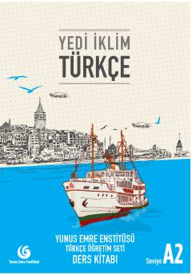

YİTurk tilini A2 darajasida o'rganuvchilar uchun mo'ljallangan darslik.
Ushbu darslik turk tilini chet tili sifatida o'rganuvchilar uchun mo'ljallangan bo'lib, A2 darajasiga mos keladi. Kitob Yunus Emre Enstitüsü tomonidan tayyorlangan bo'lib, unda o'qish, yozish, gapirish va tinglash ko'nikmalarini rivojlantirish uchun turli mavzular va mashqlar jamlangan.